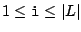
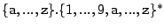
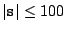
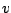

PUSH v : puts value v on the top of the stack;
POP x : removes the value at the top of the stack and
puts it on variable x;
DUP : duplicates the top of the stack, i.e, repeats the value at the top by pushing it again;
ADD : adds the two values at the top of the stack;
SUB : subtracts the two values at the top of the stack;
MUL : multiplies the two values at the top of the stack;
DIV : divides the two values at the top of the stack;
READ : reads a value from input and puts it on the top of
the stack;
WRITE : writes the value at the top of the stack on output followed by a \n;
JUMP v : jumps to instruction v;
JUMPPOS v : jumps to instruction v, if the top of the
stack is greater than 0;
JUMPZERO v : jumps to instruction v, if the top of the
stack is 0;
i, where
.
Whenever we reach an instruction not defined, the program ends. For noncommutative
operations, the top of the stack is the first argument. A variable
s is a string in
 such
that
. In the above,  can be a constant or a variable. All arithmetic operations remove their
arguments from the top of the stack and put their output
on the top of the stack. Finally, when any instruction reads the top
of the stack it removes it.
#. This is followed by the a data section consisting of a set of integers, one per line, which are the
inputs for the program. A data section is also terminated by a line with the symbol #.
ABORTED if something wrong happens. The output of each program should be terminiated by a line with the symbol
#.
READ POP num PUSH 2 POP x PUSH num PUSH 2 SUB JUMPPOS 31 PUSH num PUSH x SUB DUP JUMPZERO 28 JUMPPOS 28 PUSH x PUSH num DIV PUSH x MUL PUSH num SUB JUMPZERO 31 PUSH x PUSH 1 ADD POP x JUMP 9 PUSH 1 WRITE JUMP 33 PUSH 0 WRITE # 7 # READ READ DIV WRITE JUMP 1 # 5 25 25 5 0 1 7 8 # PUSH 0 POP m PUSH 10 DUP PUSH m ADD DUP POP m WRITE POP temp PUSH 1 PUSH temp SUB DUP JUMPPOS 4 # # PUSH undefined WRITE # # READ POP defined PUSH defined WRITE # -14 #
1 # ABORTED # 10 19 27 34 40 45 49 52 54 55 # ABORTED # -14 #